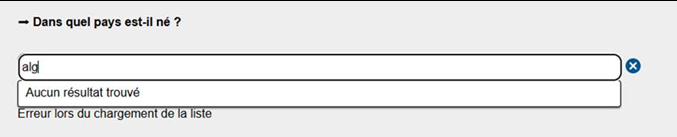
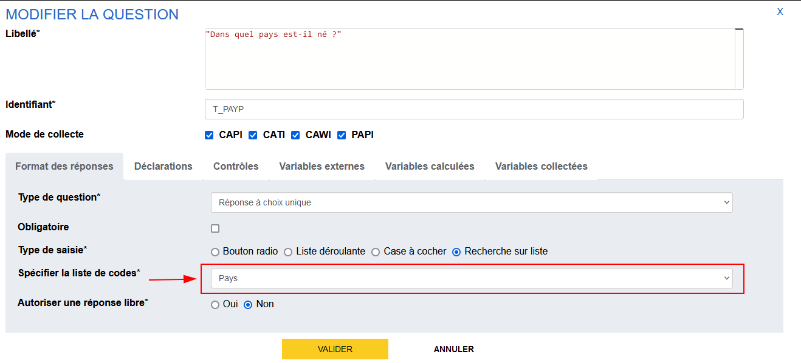
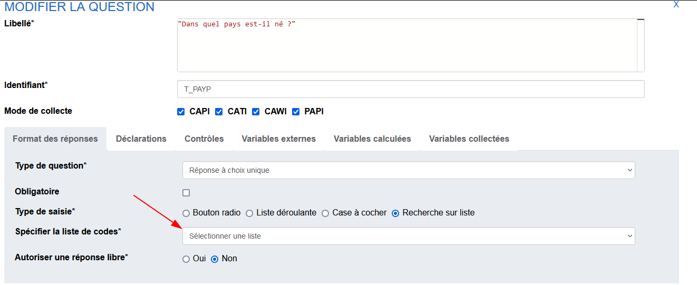
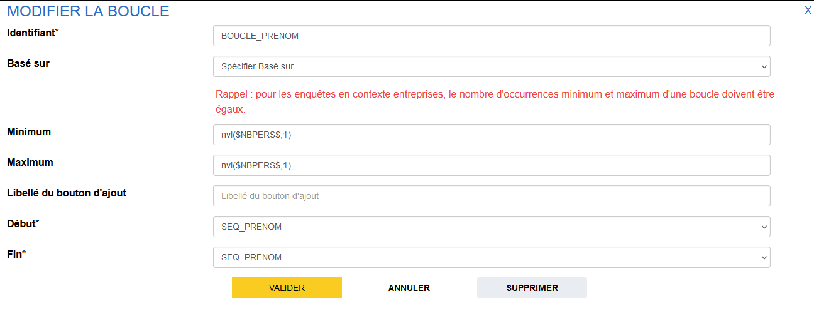
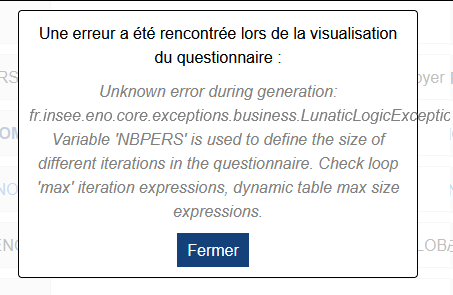
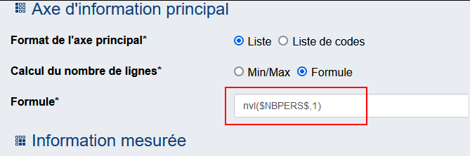

Problèmes les plus fréquents
Problèmes les plus fréquents
Génération KO pour la visualisation depuis Pogues
Lors d'une visualisation, un message "Une erreur a été rencontrée" apparaît.
Astuce
Tenter de générer le questionnaire séquence par séquence
- si une séquence pose souci, descendre sous-séquence par sous-séquence, voire question par question et identifier la question qui pose souci.
- si toutes les séquences se génèrent, il y a probablement un problème de boucles ou de doublons. En effet, des listes (dans les QCM ou QCU) peuvent avoir le même nom, notamment pour les questionnaires qui font appel à la composition.
Affichage à tort de questions filtrées
Principe général : si un filtre ne se valorise pas ou pas bien, la question est affichée donc si la question s'affiche "à tort", le filtre est probablement faux.
Contrôler le filtre
- vérifier que les autres variables dans le même filtre sont également affichées
- ajouter des déclarations contenant les variables impliquées dans le filtre afin de contrôler leurs valeurs
Filtre qui englobe la fin du questionnaire
Lorsqu'un filtre englobe toute la fin du questionnaire, un bug peut être constaté car Pogues ne peut pas rediriger l'utilisateur vers la prochaine question, car il n'y en a pas.
Ajouter une séquence de fin
Pour éviter ce désagrément, on vous conseille d'ajouter une séquence de fin, sur laquelle on ne pose aucun filtre (faire au plus simple, juste une séquence avec une déclaration "Fin").
(Non)Affichage des déclarations
Les déclarations s'affichent en fonction des modes décrits dans Pogues : pas de mode, pas d'affichage et réciproquement si pas d'affichage, il manque probablement le mode
Génération KO pour Spécification et Papier
Dans le cas où uniquement la génération Papier ou Spécification ne fonctionnent pas, il se peut que ce soit à cause d'un caractère * présent dans un libellé ou une déclaration.
Danger
Il faut éviter d’utiliser ce caractère si ce n’est pas pour l’utiliser comme une balise markdown. Exemples :
*mon texte*pour faire de l’italique : mon texte**mon texte**pour avoir un texte en gras : mon texte
Solution
Remplacer le caractère * par un caractère qui fait du sens :
Nombre de services*jours ... -> Nombre de servicesxjours... = "Nombre de servicesxjours ...".
Ou encore avec plus de clarté Nombre de services ***x*** jours ... = "Nombre de services x jours ..."
VTL avec opérations d’agrégation
Dans le cas où l'on veut définir une expression VTL faisant des opérations sur les éléments d'une variable vecteur, hors d'un tableau ou d'une boucle (à un niveau questionnaire), il faut passer par une variable calculée, sinon le VTL est en erreur
Exemple avec un contrôle
Prenons une variable SALAIRE qui est collecté dans une boucle de 4 occurrences.
À la fin de la boucle, on a : SALAIRE=[2500, 1300, 2000, 4000].
Si on veut faire un contrôle sur la somme des salaires, il faut d'abord créer une variable calculée SUM_SALAIRE=sum($SALAIRE$) de niveau questionnaire, puis définir un contrôle avec cette dernière.
| Expression VTL du contrôle | Affichage du contrôle |
|---|---|
sum($SALAIRE$) > 5000 |
 |
$SUM_SALAIRE$ > 5000 |
 |
Recherche sur liste KO en visualisation
La nomenclature sélectionnée pour une recherche sur liste (suggester) peut mal être chargée lors d'une visualisation. On a alors un message Erreur lors du chargement de la liste.
{kind=link}
Dans ce cas, il s'agit d'un conflit entre plusieurs questions qui ont été créées avec des versions différentes de la nomenclature (Ex: Pays du millésime de 2023 et celle du millésime de 2024).
Solution
Retourner sur la question avec la nomenclature de l'ancien millésime et recharger depuis Pogues les suggesters concernés pour qu'ils aient tous la dernière version de la nomenclature.
Exemple concret
- On définit, dans un questionnaire
X, une questionT_PAYPsur le pays d'origine du père dans Pogues, fin décembre 2023 en utilisant la nomenclaturePAYS.
Ici "Pays" va être associé à la nomenclature
PAYSdu millésime 2023.PAYS_2023 - En début d'année 2024, la nomenclature
PAYSpour le millésime 2024,PAYS_2024est publiée et intégrée dans Pogues. - Après cela, on crée une nouvelle question
T_PAYMsur le pays d'origine de la mère. Quand on va sélectionner "Pays" dans Pogues, ce dernier sera lié à la nomenclature la plus récente disponible, c'est à dire,PAYS_2024.
{kind=link}
 Quand on va vouloir visualiser, on va avoir un conflit dans les nomenclatures chargées et Pogues va prendre l'une des deux (imaginons pour l'exemple que c'est
Quand on va vouloir visualiser, on va avoir un conflit dans les nomenclatures chargées et Pogues va prendre l'une des deux (imaginons pour l'exemple que c'est PAYS_2024). De ce fait quand on arrivera sur la question T_PAYP, la recherche sur liste semblera être indisponible car il ne trouvera pas PAYS_2023 mais pour T_PAYM elle sera bien chargée.
Si on reprend notre exemple décrit dans le "Cas concret", il suffit d'aller sur T_PAYP et de resélectionner la liste "Pays".
{kind=link}
On peut remarquer que la question semble être désélectionnée alors que la variable est bien générée. C'est le signe qu'on est bien dans le cas décrit ci-dessus !
Generation KO Boucle + Tableau dynamique
Erreur lors d'une visualisation :
Variable 'X' is used to define the size of different iterations in the questionnaire.
Check loop 'max' iteration expressions, dynamic table max size expressions.
Solution
Avoir exactement les mêmes formule VTL quand on définit à plusieurs endroit les dimensions d'une boucle ou d'un tableau dynamique à partir d'une formule VTL
Exemple concret
Si dans un même questionnaire, on a une boucle récoltant un vecteur, exemple la liste des prénoms PRENOM, et qu'on veut injecter dans un tableau dynamique ce vecteur, on va vouloir que ce tableau fasse la même dimension que la boucle.
Imaginons la taille de la boucle est définie par la variable numérique NBPERS.
On a alors pour la boucle BOUCLE_PRENOM les valeurs suivantes
nvl($NBPERS$,1)
{kind=link}
Pour mon tableau je définie la dimension $NBPERS$. En voulant visualiser je vais avoir l'erreur suivante
{kind=link}
Il suffit de mettre la même formule pour les deux dimensions nvl($NBPERS$,1) ou $NBPERS$.
Dans notre cas on choisi de mettre nvl($NBPERS$,1) pour le tableau et la visu fonctionne de nouveau ✨
{kind=link}